从太空宇宙科学
认识佛说宇宙学
冯冯
慈忍 / 誊录
（一）从宇宙起源的科学学说认识佛说宇宙
在过去的数百年当中，天文学界对于宇宙源起的研究，是从哲学上的推测趋向于科学观察与求证，而扬弃了宗教的启示。甚而引起一般对科学与宗教及哲学都只有一知半解之流走上打倒宗教迷信而滥倡科学新迷信之途。
近来的科学界的研究新方向，却显示着钟摆转移回到宗教的启示方向去了，有其是倾向于佛教的观念去寻求宇宙真理。
十七世纪地科学家埃萨·牛顿（Isaac Newton），观察苹果从树上坠地；因而创立了地心引力与万有引力学说，但是，他无法解释宇宙中为何会有万有引力，他只好说那是一位上帝在控制着一切，才使到唯一有人类的地球不致于万有引力所毁灭。牛顿的万有引力学说，仍经得住今日科学的考验，但是，他的上帝支持唯一地球之说， 却早已不受到新科学界的赞同。即使是早在与他差不多同期的伟大天文学家兼物理学家荷兰人克理斯泰·威根士（Christian Huygens），就已发表过意见，说宇宙中到处有着生灵居住的星球；我们的地球并不是唯一有人类生物的世界。
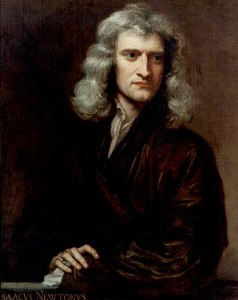威氏的学说当然被当时的教廷视为异端邪说，教会直到今日仍然坚持只有一个地球世界；别无其他的地球，因为上帝只创造了这唯一的地球给予生灵生长。有些笃信该一宗教的现代科学家，也仍然奉此说为主 自臬，不过，大多数科学家宁可避开而不谈上帝。
牛顿虽然笃信上帝创世，他的机械力学说万有引力说却为他以后的科学界铺了路，逐渐地，越来越积极地，以无声的方式否定了上帝创世的神话及与之相似的经不起考验的论调。科学由是与犹太教基督教的“创世纪”分了家。“创世纪”已经不能满足现代人的求知欲望。信仰基督教是一件事，接受了“创世纪”神话是另 一回事，很多信仰基督教的科学家，尤其是新一代的，都仍然保持着对耶稣基督的爱心的信仰，但是，扬弃了古代犹太民族神话的“创世纪”。其实，这也并没有什么矛盾 。综观新约全书，都找不到耶稣肯定旧约的“创世纪”的言论。耶稣是以博爱平等施与等美德立教，并未以承受古老犹太神话创世纪去传道。耶稣是个很谦虚的伟大先知，自称“人子”而已，一切其他的神话色彩与衔头，都是后世教会加上去荣耀衪的。现代科学家，扬弃了古老犹太民族神话的“创世纪”，而仍然信仰基督，并无不妥，可说毋宁是明智的选择！
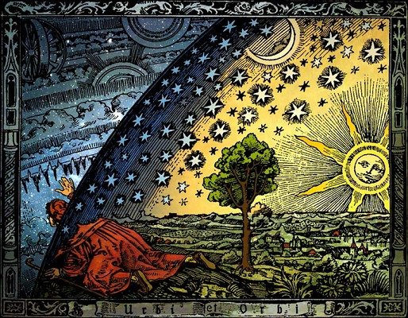
扬弃了“创世纪”神话的科学家，得以自由研究追寻宇宙真理。于是，在十九世纪末到二十世纪末这一百年左右当中，科学突飞猛进，天文学宇宙学的新发现越来越深入太空宇宙。今日的天文学界已经认识了和陆续不断地 用科技证实宇宙的复度多元性。
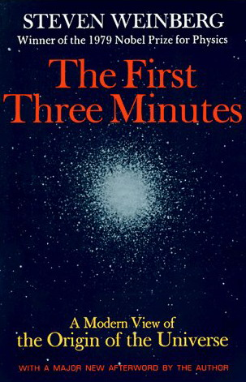但是，也正如著名的太空科学家，史提芬·威恩柏（Steven Weinberg）在其名著“最初的三分钟”（The First Three Minutes）一书内所说的：“越知道得多宇宙的情形，就越感到无知。”
科学界已发现宇宙的奥秘，只不过是沧海一粟！已知的发现，往往带来更多的疑问，也发现奥秘的后面，尚有无穷的奥秘，空间之外，更有无穷的空间，时间之外，还有多元的时间，粒子之下，仍有更微的次粒子，光速之上，还有更快的速度，多元宇宙之外，更有无穷的多元复度宇宙！……
以往的很多宇宙物理理论，在地球上是金科玉律，可是不能适用于外太空深处，也不能解释复度多元宇宙的情形。科学界多年来纷纷努力去寻找可以解释宇宙变幻无常的理论，同时也有人感到这些新理论都不够完善完美，于是，又再回到宗教概念上 面去找寻答案。但是，几乎完全没有一个科学家可以安躺于犹太民族旧约的“创世纪”摇篮之内，因为“创世纪”启示的是一个一元的世界，它甚至于没有脱出中东以色列 的群山范围。
近年来，佛教经典大批地被翻译成西方文字，被介绍给西方学府，这些西方学府的东方哲学系的学者们，大多数只拿佛教佛理当中的哲学部分来研究，甚至于并不尊重它的宗教。但是，西方的科学家们，尽管也并非以信仰为出发点，却都注意到佛典内的惊人 的宇宙物理现象记载！他们发现佛典的宇宙的综合复度 多元性，其中不少已经可以用当前尖端宇宙学发现予以相互印证，其中还有更多的晦涩的奥秘尚待进一步的研究！“佛典热”成为当今世界很多先进国家科学界的研究新潮流，这并非说，只要看佛经，不需科学研究，就可穷究宇宙之奥秘。也不是说科学界打算用佛经取代科学实验与研究。只是说，科学界在感到理论及推论拙穷之余，走上了参考佛经内复度多元宇宙的启示，作为科学研究宇宙的辅佐或导航，尤其是在宇宙的多元时空上面。佛经所载的资料的多元时空，更引起西方尖端科学界的注意。
大方广佛华严经卷九初发心菩萨功德品第十三曰：“……微细世界即是大世界，知大世界即是微 细世界，知少世界即是多世界，知多世界即是少世界，知广世界即是狭世界，知狭世界即是广世界，知一世界即是无量无边世界，知无量无边世界即是一世界，知无量无边世界入一世界，知一世界入无量无边世界……。”
这些佛知亦为当前科学所仍未知的。
下文将先简略讨论西方宇宙学的发现，文中将摘要列出佛经内的多元时空记载。
（二）从宇宙大爆炸起源认识无限佛刹
阿含经内大楼炭经（晋译本）卷一阎浮利品第一云：“三千大千世界悉烧成败，是为一佛刹”。
大方广佛华严经（晋译本）卷三十七性起品第三十二之四云：“十方过八十不可说百千亿那由他佛刹微尘世界，各有八十不可说百千亿那由他佛刹微尘世界等，如来悉现身！”“十方无量阿僧衹不可思议不可称不可量不可说法界虚空等一切世界......。”
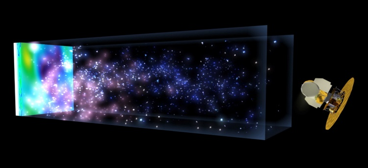
天文学家与太空物理学界，辛勤的用电子显微镜，无线电天文望远镜，红内线天文观测学等等多种仪器观测宇宙深处，运用高级的数学，计算及推理，再根据这许多资料，推论出宇宙源起论，其中最受大多数科学界认许的一个理论，就是“砰然大爆炸”（Big Bang）理论（详情请参阅“内明月刊”以前多期所刊拙作多篇，及天华公司一九八七年一月一日出版拙着“太空科学核子物理学与佛理的印证”。此处本文不赘，只是简述重点。）
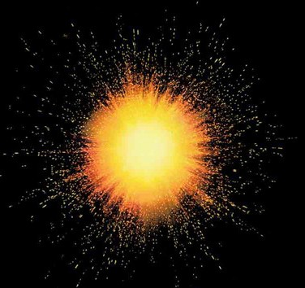“大爆炸学说”认为宇宙是从一点极高密度的空无突然爆炸扩散而成的大爆炸的时间推算为大约在距今一百亿年至二百亿年前（10 to 20 billion years ago），于今扩散仍在进行之中。
“大爆炸学说”认为我们的宇宙是“同质均匀的”（Homogeneous）及“物理上均等的划一的”( Isotropic) 。前面一词的意义，就是说，无论从任何一个角度来观察，宇宙都是相同的。换言之，我们无论旅行到达宇宙内任何一点，它的状况都与我们所居地球的周围相似相同。后面一词的意义是 说：宇宙中的构成，无论在任何点，任何角度，都是物理上均等的，换言之，我们在宇宙中，就好比在沙漠中的蚂蚁，身边的，远处的，全都是看来完全相似相等的沙粒。
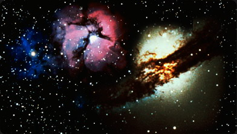“大爆炸学说”认为宇宙内没有异样（Irregularities）的成份或情况使我们分别或分辨异同，而且，它认为一切的物质都是以“绝对划一”一致方式分布的。宇宙既是物理上万全均等划一的，也是同质均匀的（虽然，一个同质均匀的宇宙，未必就是物理上完全均等划一的。）
有一点很重要，那就是，从大规模范围观察上所发现的宇宙情形是高度的物理上均等划一的。但是，我们无法旅行到外太空深处去实际接近观察，因此，很难证实同质均匀性。
在标准的大爆炸学说模型内，认为是物质的密度（Density of matter） 决定宇宙最后的命运（Ultimate density），倘若物质的密度太大，超过了“临界密度”（Critical Density）的极限：2x10-29 grams per cubic centimetre, 那么，吸引力就会终于约束宇宙的膨胀扩散，而使之停止膨胀扩张。随之而发生的将是宇宙的收缩。这样的宇宙，称为封闭的宇宙（Closed Universe）
 |
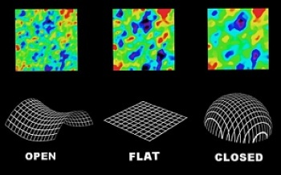 |
假若物质的密度小于临界密度的极限，那么，宇宙就会继续不断地永远地扩散扩张下去， 假如物质的密度，恰如临界密度，那么，宇宙就是作有极限的扩张，即是说，它们会永远扩散而扩张下去，不过，它的扩张率逐渐递减，直到到达“零”为止。
| 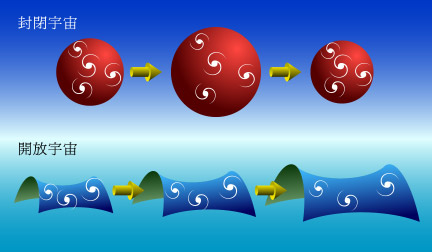 | 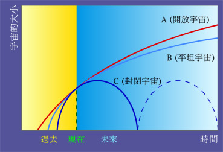 |
“大爆炸学说”获得科学界普遍接受的诸项理由之一，就是，该一学说成功地预报了宇宙中无尽份量的氦（Helium）与 重氢（Deutrium）与及宇宙中的无穷的背景辐射（Background Radiation）。
在极高密度的“虚无”大爆炸之后，最初的三秒钟内，温度高达一千亿寇温（1, 000,000,000 Kelvins ──寇温是英国物理学家寇温爵士Lord Kelvin 创立的绝对温度度数，它的零度相当于摄氏零下二百七十三度（-273 degree Celsius）或华氏零下四百五十九点四度（-459.4 degree Fahrenheit）。
在那么的高温情况下，中子（Neutrons ）就与质子（Protons 又名正子）结合，形成了重氢核子（Deuterium Nuclei），这些又旋即结合而形成的氦核子（Helium Nuclei），这些全部形成过程，只需时间几分钟即可完成。
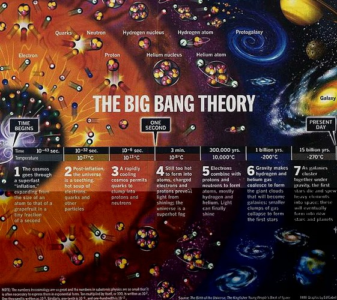
形成多少份量的这两种核子，端视初期的宇宙中心密度而定。密度愈大，形成的氦核与重氢核愈多，这是“大爆炸学说”的要点之一，已经获得天文学观察的证实其理论符合现象。
在一九四零年末期，劳夫·敖佛（Ralph Alpher）与罗拔·赫曼（Robert Herman）两氏，首先宣布发现微波辐射（Microwave Radiation） 弥漫于宇宙各处，两氏是在研究“宇宙大爆炸”的元素形成，发现大爆炸所产生的微波辐射，至今仍可察见于宇宙各处。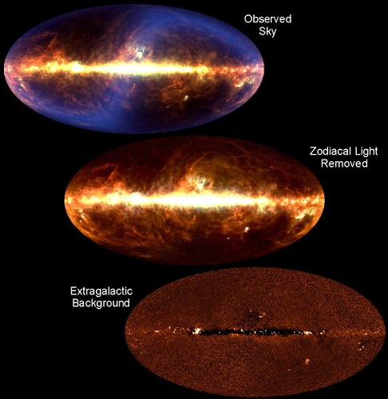
一九六五年，美国贝尔实验所（Bell Laboratory）的两位科学家，阿模·潘齐亚（Amo Penzias）与罗拔·威尔逊（Robert Wilson）在追查来自外太空无线电波干扰；发现了宇宙微波辐射的微弱回音（详见拙着“太空科学核子物理学与佛理的印证”一书，此处不赘），证实了前述两氏的大爆炸余波弥漫之说。
“宇宙大爆炸学说”虽经多方的科学家证实合理，但是，也并非毫无缺点。它的最大的疑问，就是在于宇宙大爆炸一刹那之时的“独一存在”（Existence of a Singularity at the instant of Big Bang） 阶段的“物理性质”（Physical Nature）究属如何？该阶段的物质密度，压力与温度，都是无限大的（Infinite），没有一种已知的物理学定律可以适用于解释它！而这一阶段，正是时空发生的开始，也是物理发生之始。
而且，大爆炸学说模型，认为宇宙从大爆炸开始，就即以物理均等的方式扩展，而形成各处皆一致的物质。这一点，在形而上哲学来看，也是不无疑问的。
另外也还有一些次要的疑问，一九八一年，美国著名“麻省工学院”（Massachusettes Institute of Technology）的青年物理学家阿伦·古斯（Alan Guth）就创立了“宇宙膨胀泡泡学说”来推论宇宙在形成初期发生短暂的奇特泡泡形成现象（详见上文所提拙着）。
| 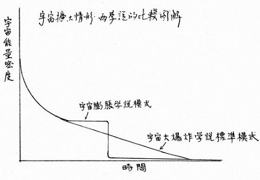 | 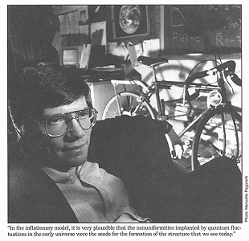 |
宇宙“大爆炸学说”与“膨胀学说”的比较图解 冯冯绘 网注：古斯的“膨胀学说”另译为“暴胀学說”阿伦·古斯 Alan Guth
古斯博士提出了第一个谜团，就是有关所谓：“扁平问题”（Flat Problem），该一理论，是在过去十年普林斯顿大学（Princeton University）的两位物理学教授罗拔·狄克（Robert Dicke）及詹·皮保斯（Jim Peebles）所倡言的。
所谓“扁平问题”就是：根据天文观测的发现：被观测的宇宙之内，物质密度是大约在“临界密度”的十分之一以下，一般的观测研究与理论研究，数学研究指出，在宇宙内的霸子（音译 Baryons,有时译为卑子，这是一种次原子微粒，透过“核子强力”而反应，）；其密度是临界密度的百分之四至百分之十之间。在原则上来说，物质的密度是那么稀薄，它接近临界密度的机会是很微的。
从这样的观测计算，那么我们的宇宙就是几乎扁平形的了。物理学家仍然致力于追寻根底。到底它是否扁平形的。这个“扁平问题”，是当前天文宇宙学家，数学家与物理学家都非常关切的问题。
假若我们的宇宙的宇宙现况是密度在百分之十以下，而又呈扁平形，那么，又有更多的疑问产生了！在大爆炸后一秒钟，宇宙的一部份在105秒，及在10-31秒之际，可能是扁平的，这一段时间，是公认的“总统一阶段”“Grand Unified Epoch”，其时，核子强力，核子弱力，电磁力等都还结合在一起，而宇宙的一部份又可能在1050秒之际是扁平的。物理学界对于这些扁平现象及时间，尚未找到满意的解释。
另外有些科学家指出，宇宙在大爆炸的开始刹那，就是扁平形的，因此，倘若它在1050秒乃至10-35秒都呈现扁平，也不足为异。
“扁平问题”，如果以现阶段的物理学去看，那是走不通的。科学家们很多因此在找寻新理论，也有很多人从事于钻研佛经佛典去寻找灵感或答案。
另一个疑问谜题，就是所谓“地平线问题”（Horizon problem），这是物理学家窝富刚·赖德勒（Wolfgang Rindler）在一九五六年提出的。
要了解这一个所谓“地平线问题”，我们首先得再检验一下大爆炸学说的标准模型之中最不普为人知的特色：那就是──宇宙有两个大小（体积）。第一个体积是宇宙的年龄（以英文字母t代表之）乘光速（以英文字母c代表之）的乘积，写成方程式就是：h = c x t这是根据光速最快最大的理论 而推论出来的。
我们无法旅行超光速的速度，因此无法直接获得超越地平线以外的任何资料。换言之，我们无法看到地平线后面的宇宙情况，地平线是我们可观测宇宙（Observable universe）的边缘。
今日的新科学已发现宇宙内，光速并非绝对最大的速度。此一话题，暂不在本文讨论之列，因为势非详论难以说明，尚容另文讨论。
但是即使以最新的“光速非最快”发现而言，上述的“地平线问题”依然存在，因为我们连光速都追不上，何况超光速？而且，就是再新式的天文观测仪器，包括了电子及无线电波天文观测仪在内，亦很难在地球表面上越过地平线的障碍，除非把观测仪装设在深入太空的卫星 或太空探险船上。但是，它虽可超越地球表面的地平线，却仍然难以超越宇宙的地平线，因为宇宙的形状，无论是扁，是圆，也都有一个极终的边缘，若无超光速航行，很难窥见它的遥远地平线后面的景色。
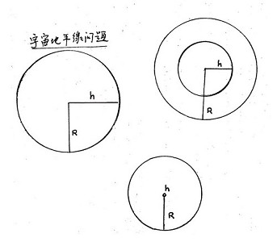
宇宙地平线问题 冯冯绘
在大爆炸学说 的标准宇宙模型，有一个很重要的宇宙规模因子，以英文字母R代表之，在“封闭的宇宙”（即是有极限的之意），R是宇宙的半径（见图），可以圆形半径比拟之。但是在无极限的扩散宇宙（又称开放宇宙），因为宇宙既是无限大，R也是无限大，不可测量。
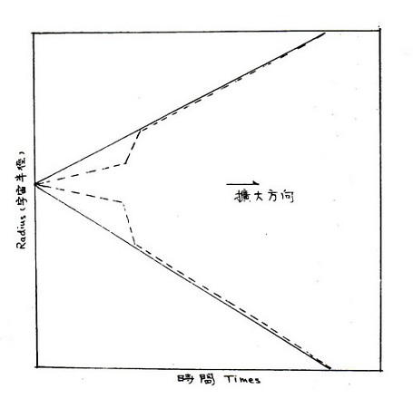
当代的科学界，显然较为安于有限的“封闭宇宙”观念，因为天文观测站收到从宇宙各方向射来的无线电波，最遥远的各距离，都相近或相等，他们推论显然是因为宇宙像是气球一般也有极限的边缘面，将无线电波反射回来，像回力球给墙弹回来一般（详见上述拙着）。采信“封闭宇宙”观念，问题就简单得多。
不过，科学界虽暂时安于“封闭宇宙”观念 ，眼睛却仍然在找寻开放的无极限的宇宙。佛经所载的宇宙，是复度多元的，无极限的宇宙，这些记载，对于科学界，非常具有吸引力，佛经内古老的智慧与智识，在这一方面，不可否认地，是领先于科学的，不幸地，佛经佛典，经过数千年来地佚失湮没毁灭，已经残缺不全，尤其是很多没有科学观念的佛教人士，不知珍惜佛籍，矫枉过正的任意删除了很多有关宇宙与超自然部分，只保留哲学思想，使到仍存在的佛经已不完整，更损失了大部分有关宇宙的经文。
话说回头，我们姑且尽量摄取当代科学界对于有极限的“封闭宇宙”的智识与推论，作为研究。
在“封闭宇宙”之内，光子“Photons”的数量，并不因宇宙的扩张或收缩而致于有所增减，这一点我们首先必须知道。
假使宇宙的半径减短了两个系数（Factor of 2），那么，在光子与另一光子之间的平均距离，也随之而减少了两个系数，于是，全部光子就是给关置于缩小了八个系数（Factor of 2）的容量之内，（容量volume的比例这R3）。
当宇宙扩张之时，“地平线距离”（h）的增加，远比宇宙半径(R) 快。反过来说，时间倒回去，则“地平线距离”缩短亦快于宇宙半径。
当前科学估计，我们的宇宙内的光子数量大约有1078个之多，倘若全部1087个光子都可以观测得到，那么，地平线的大小必然等于宇宙半径（h = R）。
倘若我们从“现在”倒回去宇宙中心大爆炸的时期，我们所能看见的光子数量就比现在少，越时光倒流，能见的就越少，因为只能看见在我们地平线以内的光子。
根据这一简单原理，我们可以计算出来，在“大爆炸”后的第一秒钟之时，“宇宙地平线距离是10 = 9R，其时只有1060个光子可让我们看见，跟1087比，是少很多了。
再倒回去看时间，在大爆炸后 1035 秒之时，h大约是：1027 k，那时候，只有大约 一百万个光子可给我们看见于地平线之内。
再倒回去看时间，回到大爆炸后10-43 sec秒之时，则在地平线内，全无光子可见！
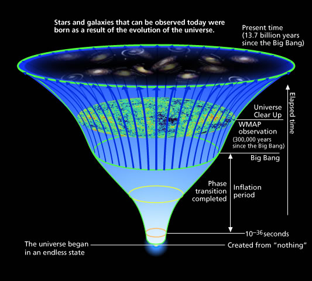
这样推算下去，回到“大爆炸”的伊始，彼时的初期宇宙全部的光子都在地平线距离后面外面，根据物理学法则，在地平线以外，质点（Particles）与第一质点不能交换资料，换言之，就是，在“大爆炸”伊始的宇宙，所有的质点均是不能互相沟通的（incommunicado）。而且，无法彼此修正“不规则现象”（irregularities），再换言之，即是早期的宇宙并不可能是物理上一致均等的（Isotropic）──这一点，对于我们读佛经的人，非常重要，留到后文再说。
现在很多宇宙学家都因此而认为：宇宙开始之时，不可能是绝对物理上均等一致的。毋宁说应该是很混乱不规则不一致的情况，是到后来才渐渐一致化。
持这种看法的科学家们，演创了“最大或然率原则”（Principle of Greater Probability） ，来解释宇宙初期。不过，此一学说走进了死巷。因为，宇宙并未途径在形成之后来划一化物理。理由是，质点与质点之间距离若大于“地平线距离”。就无可能彼此产生相互作用（interaction）。在“大爆炸”刹那之后，不可能彼此感应而修正不规则现象。
可是，我们观察到的宇宙，就观察所及的部份而言，它是物理上均等一致的，这就令人费解了！这个“地平线问题”，引起了新的疑问：“为什么宇宙现在不混乱？”
苏联的著名太空物理科学家雅可夫·焦多维茨（Yakov B. Zeldovich）博士对此问题提供的答案是：“宇宙从一开始就是物理上均等划一的”。
假若我们采信焦氏的推论，那么一切的问题就简单，甚至不发生问题了，连这个所谓“地平线问题”也不能成立了。
照焦氏一派科学家的看法，在“大爆炸”发生刹那，质点是尚未能互相作用的。互相作用是使到宇宙物质在物理上均等划一的。这种作用要到宇宙大爆炸后膨胀扩张才因接触而发生 ，把物质划一化。
可是，这个荅案显然并无说服性。大多数科学家都对之表示存疑。
很多科学家认为宇宙从开始就不是物理上均等一致的。他们认为“地平线问题”与“扁平问题”都是难以解释的谜团，当前的物理学理论与法则都难以圆满解答。因此，有些人人为这是个“行而上”的问题。这些需要向佛经佛藏去找寻解答的灵感。
就已知尚存的佛经内有关宇宙的记载，很显然是认为宇宙之内，各宇宙之间的物质并不是均等划一的（后文另行引述）。这可反证佛经所载的宇宙，并非单一宇宙，而是多元宇宙，佛经的宇宙知识，实在已经伸张到宇宙的地平线后面，而且，佛经启示的宇宙是无限大的开放的宇宙，并非有限的封闭宇宙，这些都须在后文再引述讨论。
在进一步讨论之先，我们必须先了解当前尖端科学的困惑谜团，上面提到两大太空物理难题，就是为此。
现在，我们的讨论一下“宇宙膨胀问题”。当今科学界重视的“宇宙膨胀学说”，既有美国麻省工学院物理学家古斯于一九八二年提出的“膨胀学说”，科学界通称之为“老膨胀学说”，又有苏联苏维埃科学院（Soviet Academy of Science）太空物理学家林德（A. Linde）于一九八三年提出的“膨胀学说”，科学界通称之为“新膨胀学说”。另外，还有美国宾夕凡尼亚州立大学（University of Pennsylvania）的物理学家安迪·阿布力（Andy Albrecht）与保罗·史丹哈特（Paul J. Steinhardt）两氏最近提出的“超级等称结构”(Supersymmetric) 原始初发（Primordial）宇宙膨胀学说。（详见上提拙着各文）。
现在，在热带旅游海滩上，很流行玩一种巨大的：“月波”（Moon Ball），那是一只巨大的气球，大约有十多英尺的半径，青年人喜欢在海滩上推动这只“月波”奔跑，或在海水中推玩它。当你身体贴爬在巨大的“月波”上，你感觉到这支巨型气球的“球面”是圆的弧形的。温哥华的小山公园顶上，有一座球状的全部玻璃温室，内植热带花草，你若攀登球顶，也仍感到球面的圆形，但是，不会像“月波”的球面那么显著。温哥华八六年世界博览会的标志，是一座巨大的圆球玻璃建筑，你若攀登顶上， 也仍感到球面的圆形，但是，不会像“月波”的球面那么显著。
温哥华八六年世界博览会的标志，是一座巨大的圆球玻璃建筑，你若攀到顶上，会不大感到它是球面，只觉到有微微的弧形，如果你是一只小蚂蚁，爬到那顶上，你会完全感觉不到它是球面，你会感觉到它的表面是平坦的。倘若你把这座圆球放大或膨胀了几千几万倍，你会认为它的面是平坦的，倘若将它膨胀系数增大到为1040以上，你在它的圆面上所见，就是一望无际的大平原，地平线的边缘，是那么遥远，你穷极目力，也看不到它了，也看不到它后面的情景了。
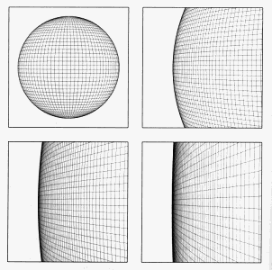
了解这一点以后，我们就可以接受古斯博士所提出的“宇宙膨胀学说”，他认为宇宙是一个大泡泡或是大气球形状，越膨胀得大，球面越呈现扁平──当然，这 是就我们渺小的人类尺度观点而论。若以超级巨大的眼光看它，也仍是球面的。
古斯认为，宇宙大爆炸后10-35秒，就开始膨胀，直到1030秒为止，膨胀越大，球面越扁平。
宇宙在未膨胀之前，他的物质密度，且不去管它。但是，在膨胀之后，密度必定增大，宇宙膨胀到球面呈扁平之时，密度就增到极大的“临界密度”（Critical Density）。
在标准的旧大爆炸学说模型，大爆炸后的10-35sec 秒钟，地平线不大，大约小于宇宙当前的规模系数（Scrle Factor）的1027倍，所以，质点没有可能发生相互作用。反过来说，倘使“地平线”是大了1027倍，或是规模系数小了1027倍，那么就不会有上述的“地平线问题”出现了。古斯的“新膨胀学说”， 与“旧膨胀学说”不同之处，是新学说认为“规模系数”比“地平线”为小，因而所有的质点都可以相互沟通而改进，成为一致化。新学说的优点，就是一举而消除了上述的“地平线问题”与“扁平问题”两大疑团，为宇宙物质的物理结构上一致化提供了一种勉强的解释。
不过，这解释是否令人满意呢？ 当然不是。
新旧膨胀学说都无法解释，质点之间是如何相互作用的。 这仍是物理学至今的一个难解的谜。将来是否会出现新的学说来提供较为合理的解答，也尚在未知之数。当前很多物理学家，一面在努力研究，一面也在向佛经找寻灵感。
我从对佛经的认识中找到的答案：那就是“识”！是“识力”促成在我们居住的这个色界（物质）宇宙内的质点互相作用与一致化──再另外其他 的宇宙内，或在超级爆炸众多空间内，一切作用均是由“识”所支配，产生一切作用的。我相信终会有一天，世界科学界会逐渐从佛经中找到这个答案，而予以发扬。
(三)从宇宙构成不均等认识佛说旋世界转世界的多姿
大方广佛华严经卷五十五入法界品第三十四之十三云：“……我悉了知，如此娑婆世界，知十方世界，世界性、世界海、世界轮、世界圆满、世界分别、世界旋、世界转、……”卷八卢舍那佛第二之一说：“诸世界海有种种形，或方或圆……”
华严经卷五十九入法界品三十四之十六有云，善财童子菩萨见：“诸如来及其眷属诸大菩萨声闻缘觉净世界、不净世界、杂世界，或世界有佛，或世界无佛，或上中下世界，或有世界如因陀罗网，或有翻覆仰伏世界，有复睹平正世界”，卷四十五入法界品第三十四之一说：“种种色香须弥山云充满一切法界”。
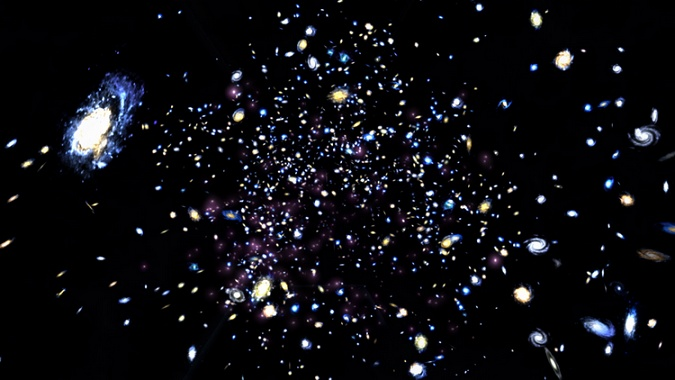
佛经像这样开示多种宇宙的形状，我们可以从天文望远镜就看到上中下方的星云漩系，像网一般分布，有些是斜的，有些是仰的，有些是平正的，有些是伏的，有些是歪的。许多大宇宙的形状，现代很多科学家推测亦类似地有多种形式。有网状，有斜形，有扁圆形，有直立形，有平坦的，或者也有长方的，卷层的(须弥山云就是星云漩系)。
古斯在他的宇宙膨胀学说内称：宇宙的物质形成，曾经过一个过渡阶段，有些相似于物质经历气体、液体至固体的过程。
我们不妨一看类此的情形：假若我们将一批煮沸的水蒸气慢慢地冷却。它的温度就会慢慢地降低到“冷凝点”(摄氏一百度)以下，但是它并无水汽冷凝发生。这样温度以下的水蒸气，是被认为超冷(super cooled)的。它的状态极不稳定，只消有一滴极小的水滴进这团蒸汽之内，蒸汽就立刻在水滴的周围冷凝，渐而全部化为液态的水。
古斯推论称：当宇宙大爆炸后，发生膨胀扩张之时，它的时空内的光子、电子、霸子、微中子、粒子、夸克……等等能的质点，也在逐渐冷却下来(宇宙时空内，并非绝对真空，所谓“空”，并非“虚无”，这一点是当今尖端科学所公认的，与佛经内所说的的“空中不空”符合)。冷却的结果，是形成很多种元素的原子(佛经说“空生万法”，正是此一写照)。宇宙的“能”的密度也随之起了变化，在大爆炸后的10-35秒之时，宇宙时空也变为“超冷”情况。
根据爱因斯坦的“相对论”，宇宙的扩张率(Expansion Rate)，决定于它所含的“能量密度”(Energy Density)。
根据宇宙膨胀学说标准模型(旧说)，宇宙扩张越大，则其时空内的质点“能量密度”越减少，密度减少就会使宇宙扩张率减低。
古斯的宇宙膨胀新说，认为宇宙在膨胀冷却过程中，有一段“超冷”的悬止阶段于一个较高的“常数值”(constant value)以允许宇宙膨胀得更大，(比旧说更大的常数值膨胀)，这个大膨胀时代中，倘若时空真空内的能量保持一个常数很长久，养精蓄锐般地，那么宇宙就可以膨胀扩张到1030或1040那么大的系数，在这个“超冷”阶段，不知何时，不知怎样，有一粒极小的液态水点侵入了它，于是，真空内的能量很快就枯毁，于是膨胀就终止了。
古斯对这段推论，尚未提出数学计算来予以演绎论证。不过，科学界认为这是很值得研究的推论。
膨胀学说不是毫无缺点。像上述的不知何时及如何会有小水滴侵入，这就迄无任何可被人接受的解释。既然宇宙形成伊始，液态的水尚未形成，从何而来的水滴呢？除非是它来自另外一个宇宙，如果确属如此，那么，就反证确有其他的宇宙，乃至于超级大宇宙，即是佛经所说的无穷尽的世界与界。
古斯认为宇宙真空的能量的衰变朽灭(Decay)是可能不止发生一次的，它可能在不同的时空中发生多次，由于宇宙不断地在扩张，真空能量的朽灭率必须追得上扩张率；才可使冷凝作用完成于各处。古斯认为这种可能性不太大，因此，宇宙中的物质的形成是有不同次第的，物理上结构是不均匀不一致的。
我个人同意古斯的这个推论。我也认为即使在我们这一个宇宙之内，物质的物理结构也不是完全均匀一致的，也不是一次形成的，也必有先有后，温度不同、压力不同、时间不同、物理构造也就有不同。我的观点，来自佛经。
不过，我不是物理学家，我也没有数学方程式可以作为论证。我的看法，一方面来自佛经的宇宙观念，一方面是我的直觉。
但是，由于科学界公认，可观察到宇宙部份，物质的构成是物理学上均匀一致的，因此，他们推翻了古斯的宇宙膨胀新学说内的这一环。
苏联太空物理学家林德(A. Linde),美国太空物理学家史泰因赫尔特(Steinhardt)，与阿尔布烈特(Albrecht)(见前文，及上述拙着──三氏曾指出宇宙的膨胀会停止)，三氏分别提出了新的解答。三氏各别的宇宙膨胀新学说，相当复杂。这里我只是摘要略提，不予详述。
三氏的新学说，有一个共同点，那就是，本来就有真空的能(Vacuum energy)存在，而且其数量不少，足以促成宇宙膨胀。这一点学说，庶几接近宇宙真相，即是佛经所说的本来就是空有并存无源。
三氏的新学说，认为是很小很小的一点的“能”的泡泡，亦能膨胀成为一个完整的已知的宇宙。三氏的发现，亦近于佛经所言“芥子之中藏须弥”。
三氏新说认为，原来就存在的“能”，弥漫于宇宙内外，它们把不划一不规则的质点，推倒地平线以外，因此我们观察不到。
三氏新说还有一个特别的优点，就是解答了“单极问题”(Monopoles)──就是只有“南极”和仅有“北极”磁场问题。此一问题是“宇宙大爆炸学说”旧说的“大统一”理论(Grand Unified Theory)所提出的。该理论将原子弱力、强力与电磁力三者结合为一，因而预言宇宙在理论上应该充满“单极磁场”，但是，事实上，迄今仍未曾观察到有“单极”情形。
三氏新说认为：初期宇宙的“单极质点”是密度很大的，不过由于宇宙不断膨胀而致淡薄了。宇宙膨胀已大到这种程度，恐怕，在我们可观察到的宇宙范畴内，顶多只可看到一个“单极”──事实上，我们连这一个“单极”也尚未见到。
三氏的新说，也有其缺点，其一：宇宙膨胀的情况──它的真空朽化为现状宇宙的，并不均匀。这一点，并不符合已知的物理。新说的此一缺点，与旧说同病，亦不能解释。
其二：新说预言，在宇宙膨胀阶段终结之时，物质的密度将会有起落的变化。新说甚至于预言这些密度变化的大小。各个星云漩系，显然就是宇宙物质密度变化的表现。在星云漩系以内的物质密度，比在外面的为大。有些理论物理学家认为：在宇宙大爆炸之后的10-30秒钟之时，物质密度的变化就开始了，以形成星云漩系。但是，膨胀新说所计算的这些密度变化的规模，竟大于各星云漩系十万倍，也比宇宙内的微波背景辐射(Microwaves Background Radiation)大了十万倍，均与现阶段观察不符合。
由于新说有上述两点缺点，因此，很多宇宙学家认为三氏的膨胀新说亦难以令人满意，必须另寻新的理论及解释。
照古斯的理论来说，不管初期宇宙的密度是什么情形，当前的密度也该是临界密度。有些理论物理学家表示不同意。
这就不得不再一提“平坦问题”与“地平线问题”。这些谜团，并不像分析氦气光谱那么容易肯定。到底我们还是太渺小，无法超越宇宙或到宇宙外面去观察，谁也不能肯定这一个宇宙到底是平坦的或圆弧形的；是怎样作用行为的。很不幸地，我们迄今只能在我们的宇宙之内的一角观察得到的只是宇宙的极小的一部分，我们只能在理论上予以推论。好比小蚂蚁爬到喜马拉雅山上，从一角的沙石去观望山峰，又好比海水的小小微生物，从周围水波去观察海洋。我们以当前的科学如此发达，也还连我们居住的这一宇宙都还摸不清楚，遑论其他更多的三千大千世界的宇宙！可是，科学家们是大多数推断在我们的宇宙之外，还有无数的宇宙时空的，因此，很多科学家对于佛经内所载的三千大千世界的复度多元时空感到惊奇与有兴趣。倘使佛经只是像某些人所诬指为“落后的印度古代人”的“迷信想象”观念，那么，迷信又落后的想象力，怎么会竟然领先于二十一世纪即将来临的新科学？难道新科学竟会开倒车走向“迷信”吗？科学家们却并不认为佛经是落后或迷信，他们认为佛经有神秘的宇宙知识，是超越时代科学的，超越人生哲学与人类经验的。
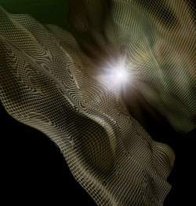佛经所知道的多元无数宇宙，使现代科学界在初窥宇宙奥秘之际，感到惊讶与兴奋，也同样感到无法用已知的物理去解释。在我们的地球上，一切物理，都可以用牛顿的力学与运动定律来计算；预知它的动向，在我们的宇宙内，至少在太阳系内的行星运动，也能依照牛顿的学说定律来计算及解释。但是，在超越感觉的极微世界与浩瀚的宇宙深处的质点世界，牛顿的一切定律都不适用。而佛经所讲的宇宙众多，时空复杂，界境繁密，极大亦极微，这都是超越当代科学物理所知的，好像有一点形而上哲学的表面意味，实际上，这些真知，正是新科学正在前进探讨的方向，佛陀说法，倘若只是一个凡人，怎会得知那么多宇宙奥秘？若非真有佛眼的极大智慧怎会知道？若非诸佛已存在于众多宇宙之间之中，亲自经历感觉或亲见，又怎能如此详细述说多元宇宙于各经藉？
谈及古斯等科学家的宇宙膨胀新旧学说，反对者指称他们的学说有漏洞，但是，反对者大多数光会批评，自己却提不出什么独特的学说来，或许将来会有比他们的学说更完美的理论，但就当前而言，我认为古斯与上述三氏的学说，仍然是领导地位，带领科学走向认识宇宙之路，不过，对于多元无数宇宙的认识，则刚在初窥试探的起步。
批评者谓，古斯等学者的宇宙膨胀学说，若系正确，理应可以正确计算及预言我们宇宙的未来发展，亦应可确实溯推宇宙的过去情况。量子力学也应能计算出宇宙膨胀之前的情形。但是，他们的计算，人言人殊，叫人莫知所从。数字差别巨大，令人怀疑，这些理论可能都不正确，要不然就是宇宙学越来越走上玄之又玄的佛经形而上哲学之途去了。
这些反对者的论调，我认为似是而非，反对者并不懂得宇宙无时不在瞬息万变，更不懂得佛经所说的“无常”。我认为反对者的论调颇有“刻舟求剑”的愚昧无知！不过，他们认为宇宙学走上形而上哲学，倒还有一些见地。不过如果他们知道佛经内的多种宇宙叙述，就不会武断至认为是单纯的形而上问题。他们可能以为佛经的形而上哲学是抽象的概念问题。这是他们很不幸的巨大错误及损失。
现在的宇宙物理学界有些人，对于宇宙资料的计算，仍然以“物理结构上均匀一致”的模式为计算基础，而不承认宇宙内存在有不一致与不同等的物质物理。这是因为在可观察到的宇宙部份，观察不到不一致及不同等的质点，在治学态度上来看，他们是够谨慎的。但是，未免有些过份保守的因噎废食。
很明白的一件事就是，上文我们已经说明了，用“物理均匀一致”的宇宙观是无法解答“宇宙地平线”谜题的，因为根本就没有问题！单以此一端，就已可反证用“物理均匀一致”观念去计算及推论此一宇宙是“此路不通”的了，更遑论进入其他的众多宇宙去探讨。
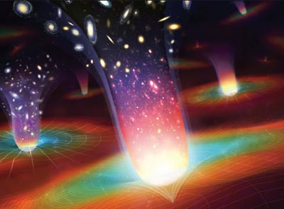基于此点认识，很多思想前进的前卫宇宙学家，就已开始双管并进地，既采用“物理均匀一致”观点，亦采用“物理结构不均匀一致”及“不等同”的观念去计算及推论我们的宇宙，计算所得汇集资料，显示着宇宙极可能以物理“不均匀”“不同等”的方式发展及膨胀，也极可能有很多的宇宙，在我们的宇宙外面，以不均匀不规则、不同等的方式爆炸膨胀！形成各样各式不同的宇宙时空！此生彼灭，此灭彼生，一时生，一时灭，正如佛经所言！
我们也发现，很多反对“宇宙膨胀”新旧学说者的理论，都经不住考验。反对者一般抨击最烈的，就是针对“膨胀新学说”所预言：宇宙大爆炸后的10-30秒钟就开始波动(Fluctuation)形成星云漩系，这是与其他学说所预言的互相冲突的。各家学说对于何时形成及如何形成星云漩系，各有不同的意见，但是，可说亦仍无一家的意见拥有坚强的物理学法则基础，也都不过是各推各的论而已。又如何有足够的理由去推翻“宇宙膨胀学说”新旧两说？此外，由于宇宙微波回声的测得，并且据估计它是在宇宙大爆炸后的十万年之内所产生的。因此，这一点也引起了“膨胀学说”的上述预言的疑问。反对者以此为坚强的反对铁证，但是，反对者亦提不出他们认为较为合理的时间数字来。
那么，到底有没有实验证据来支持“宇宙膨胀学说”呢？答案是尚未有。“宇宙膨胀学说”新旧学说的主要基础建立在“大统一学说”(Grand Unified Theories)之上。该一理论模型，预言了光子在大约1032年的年龄之时，会朽灭成为较轻的质点，但是，迄今为止，还没有任何物理实验找到这种光子朽灭化为更微的实例，反对者因此认为：连“大统一学说”亦不可靠，若要推翻“宇宙膨胀学说”，首先只要推翻“大统一学说”。这些争论，在我看来，是“有限宇宙”观念与“无限宇宙”观念之争的另一回合。佛经有说过极微再分为极极微。那么，自然连光子亦不能例外，这是我的个人心得。
(四) 从宇宙的“临界价值”认识佛说宇宙微尘数虚空无量
大方广佛华严经卷四十一离世品三十三之五云：“虚空界无量，法界无量，众生无量。”
同经卷四十六法界品三十四之二云：“不可说不可说佛刹微尘等世界。”
阿含经内起世经卷一阎浮州品第一，佛曰：“此千世界，犹如周罗，名小千世界，……周罗一千世界，是名第二中千世界……如此第二中千世界，以为一数，复满千界，是名三千大千世界……同时成立，同时成已而复散坏，同时坏已而复还立，同时立已而得安住，周遍烧已，名为散坏，周遍起已，名为成立，周遍住已，名为安住，是为无畏一佛刹土，众生所居……”
佛早已开示宇宙是多元多度微尘数的无量无限，现代太空科学家也陆续发现宇宙并不只一个，我们的宇宙并不是唯一的宇宙。不过，也仍有不少科学家在争论只有一个宇宙世界。
当然，“宇宙膨胀学说”新旧两说，也还有其他缺点，例如：它认为宇宙的密度，应该恰巧准确地伸张到“临界密度”为止。这一预言，显然不大正确。在实际的观察上，如上文多次所提，观察得知的宇宙当前密度是远较“临界密度“为小。现在弥漫于我们宇宙内的氦气，份量如此多，多到充斥于宇宙各处，无限无尽，就已知物理法则而言，它只有在霸子质点(Baryonic matter particles)的密度不超过“临界价值”(critical value)的百分之五情况之下，才会产生这么多的氦气。但是，观察及研究，认为星云漩系多系的运动，可能将之退到百分之十了。那么失踪的物质到哪儿去了呢？那百分之九十的霸子质点何在？怎么密度与学说预言相差这样大？
这只有两个可能性，其一是“宇宙膨胀学说”预言不准确，应予以废弃。其二就是：失踪的百分之九十，可能另有缘故。(可能是转入到另外的宇宙去了。)
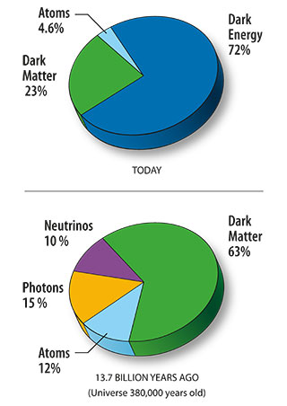宇宙学家们大多数认为第二个可能性较大。一九八零年，物理学界发现了“微中子”(Neutrinos)，有人认为微中子(详见上文所提拙着)，微中子的体积是虚的，但是他们的数量远比质子与中子多出很多，比例大约是十亿(1 billion)比一。假如说，微中子的体积，只及得电子的五万分之一，那么，微中子总数体积，也足够填满在现时观察所见的“观察密度”(observed density)与“临界密度”(critical density)之间的差距空隙了。微中子是一些虚无物体的波状非物质，电子是波状的物质的能质点，也是无形的。如果都以我们的有限眼识来看，那就是啥都看不见，都不存在，但是它们是充满于宇宙内的。华严经常说“先成虚空”，这句名言是不可以忽视的。
很令人失望地，就是从一九八零年至今，仍无物理新实验找到微中子存在于我们的世界的证据，因此，仍有人对其存在性抱疑。
“大统一学说”新说(Susy-GUT)提出了新的主张，它认为当今物理界所未发现到的质点，可能存在于宇宙大爆炸后的10-35秒之时，后来它们朽灭，化为更轻更微的质点，例如微中子，或者更虚无的极微。我个人同意此说，我发现它接近佛经的极微微尘观念。
大爆炸学说估计宇宙在过去的一个遥远时间发生，宇宙的确实年龄端视宇宙扩张率而定。宇宙扩张率又决定于宇宙的物质密度大小，与及宇宙含有的霸子微粒或辐射之多寡而定。(“霸子”是一种极微的元质点，其行为相似于光子，其旅行速度与光速相近。)
倘若“宇宙膨胀学说”是正确的，依其学说，则宇宙内充满了无数的霸子微粒，很容易地就可计算出宇宙的年龄是t(2/3)H-1。(这里的方程式内的英文字母H，代表“赫伯常数”(Hubble constant)，那就是一个星云漩系与其后退(Recession)初速的距离关系的常数。)
关于“赫伯常数”的价值，科学界争论颇多。这是一个必须以实验来记录测量始可获得的数字。通常是以“公里/秒/兆柏秒)(Km/sec/Megaparsec)的单位作为记录──公里与兆柏秒都是距离单位，彼此可以互相抵销。所以，实在不懂为什么当初赫伯博士要用这么麻烦的方法来写一个最简单的“一秒种”( 1 second)。不过，大家相沿使用下来，就习以为常了──美国德萨斯州立大学的天文学家居拉·狄·范谷勒(Gerard Vancoulurs)的实验观测，录得的“赫伯常数”多次，都是高于100Km/Sec/Mpc，不过，其他一般天文学家认为“赫伯常数”是在50Km/Sec/Mpc左右。还没有人发现这常数在45Km/Sec/Mpc以下的，近十年来，尚无人公布新的估计数字。
一个“赫伯常数”，50Km/Sec/Mpc相当于5x10-11years-1年，如此推算，H-1大约等于两百亿年(20 billions years)。“宇宙膨胀学说”估计宇宙的年龄是一百四十亿年(14 billions years)”。
最近，片尼(A.J. Penny)与狄更斯(R.J. Dickens)两位天文学家观测编号“NGC-6752”的一团星云，估计它的年龄在一千四百亿年至一千八百亿年之间，比宇宙的上述估计年龄老！这一发现等于否定了”宇宙膨胀学说“的估计数字。若非学说有误，就是在宇宙大爆炸之后，到星云形成阶段的时间，估计不确或有遗漏未予估出。
美国威尔逊山天文观察台(Mount Wilson Observatory)的天文学家阿伦·山迪治(Allan Sandage)估计此一段时间约为(1/5)H-1。
以此数字计算，将NGC-6752星云列入宇宙膨胀学说模型内，则可计得宇宙的年龄(2/3)H-1至少是：t=14(1/5)H-1Billion Years,这还须有条件，就是”赫伯常数“ 小于33Km/Sec/Mpc才行，这年数与近年来的各种估计报告都有冲突不符。
这些天文数学计算的是这个充满了压倒性多数的霸子微粒元质点为主的宇宙。但是，宇宙大统一学说与新学说(GUT and Susy-GUT)认为宇宙中还有尚未被发现的更微的辐射行为的极微质点之波，可能是它们这些极微波引起宇宙扩张得更快──比霸子所影响的扩张快得多。依照此两学说，那么，受到压倒性大多数的辐射极微波主宰的宇宙，其年龄，以方程式t(1/2)H-1可计算出来，倘若“赫伯常数”是H50Km/Sec/Mpc,则宇宙的年龄只有一百亿年(10 billion years)而已。即是说，NGC-6752星云形成的时间，尚在宇宙大爆炸之前的四十亿年以上，显然这是成为疑问的。倘若要将此一星云纳入宇宙的系统之内，那么，”赫伯常数“势非小于21Km/Sec/Mpc不可。而此一价值数字，却不符合任何现在已知的学理的。
上面这一段，是一些天文学家基于“只有一个宇宙”的观念的计算。我认为不无讨论的于地。我认为NGC-6752星云根本不是属于这一个宇宙之内的，它是可以经过这个宇宙透视得见的另外宇宙的物质之一，它的年龄，若比我们此一宇宙为老，它的形成倘在我们宇宙之前，有何不可？与我同感的人不少，此事也促使了很多科学家走向佛经的复度多元无数宇宙观念的。
倘若接受佛经的多元无数宇宙生灭不同时的观念，那么上文的许多谜团难题，就都不存在。上文所提当代科学家们的困难，在我看来，纯是单元独一宇宙观念所引领走进了思路的死巷牛角尖。
在现阶段，并非每一位科学家都能够脱出单一宇宙的观念。这一派仍然在努力用单一宇宙的观点逻辑来解释宇宙及可能是外宇宙的现象。他们尽力地将一切矛盾不符的现象予以统一，拿这一个宇宙的物理法则来估量一切未知(当然也还有少数人以地球的物理法则去估量宇宙，那就更不足了)。有些科学家，以其单一宇宙及有限宇宙的观点，认为，宇宙膨胀学说已经破绽百出，必须设法找什么学理来予以补救。最佳的而且是唯一的补救，就是再采用那早已不吃香的“宇宙常数”(Universe constant) ，那是爱因斯坦所创立的方程式；用来解释他的宇宙观的。当爱因斯坦见到后来的“宇宙扩张学说”之后，他就自动撤销他的“宇宙常数”，并且很谦虚的自认该一方程式是他毕生“最大的理论错误”(the biggest blunder of my life)。
| 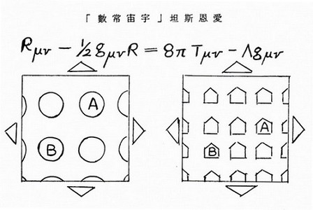 | 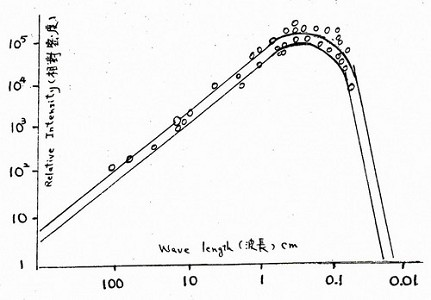 |
爱因斯坦“宇宙常数”Cosmological Constant
爱因斯坦的“宇宙常数”被宇宙学界冷落了多年。不过，平心而论，它并非那么毫无用处。假如宇宙内果真有这种“宇宙常数”，纵然微不足道，亦能改变宇宙的扩张率及延长宇宙的寿命到若干程度，可以减免“宇宙膨胀学说”的宇宙年龄估计差距。不过，“宇宙常数”，就如上文提到的“真空能量密度”一样地发生疑问──今日的宇宙，其“真空能量密度”，依理论来说是很小但尚未至于等于零。但是，此一理论引起了疑问，因为尚无证据证明接近零的真空能量确有存在。
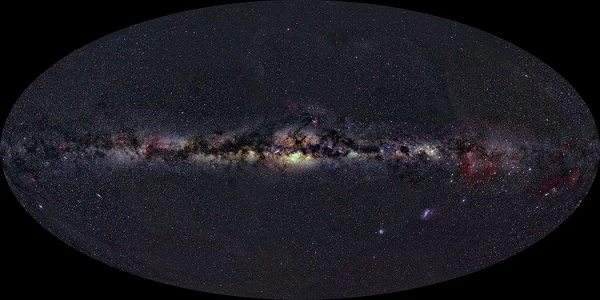
从宇宙大统一学说观点来看，在宇宙膨胀末期，宇宙的真空朽灭成“能”──这观点近于佛经所言“空生万法”──没有什么理由说真空能量会降低到接近零，如果不是这么少，又为什么至今仍未观察得到它？
还有，“宇宙常数”本身也有疑问。根据爱因斯坦的方程式，他认为“宇宙常数”影响时间与空间及宇宙中每一粒质点的行为，它既是常数，所以没有任何东西可以对它发生影响。但是，这又违反了物理学上的“行为与反应”基本法则(Concept of Action and Reaction)──根据该法则，任何物体能对其他物体发生影响力者亦会在影响之时受到对方的反影响。
爱因斯坦把“行为与反应”原则放入他的著名的“相对论”内，他指出时间空间并非是绝对的，亦不是不变的，而是由时空的内涵所决定的，而且，时空的形态也决定其内涵的物体的运动形态。
此段的英文原文如下：
Space-time is not absolute and immutable but shaped by the objects within it. At he same time, the shape of space-time determines how objects move。 ── Einstein
爱因斯坦的方程式指出了物质与宇宙时空之间的相互关系。但是，他后来把他摒弃已久的“宇宙常数”，重新采用作为支持宇宙膨胀扩张学说之用，以解决宇宙年龄的歧说纷争。他的动机是好的，不过，显然是有些自相矛盾──“宇宙常数”在意义上，是绝对而非相对的呀──这一点，引起科学界相当大的困惑。
其实，我认为，这种困惑也是没有必要的，科学界倘若不泥守于单元宇宙的出发观点，倘若接受佛经的复度多元宇宙及无常法则，那么，上述的许多困惑与迷困，就都可迎刃而解了。
爱因斯坦的名言：“时空不是绝对的也不是不变的”，正好符合了自古以来佛经内的多元多变无常的时空观念。
我认为爱因斯坦并无自相矛盾。我认为他的宇宙常数也是有伸缩性的，并非永恒不变的，问题只是可能别的科学家尚未了解他的真义，他们仍未完全放得下“唯一单元宇宙”的观念。我认为研究佛经的宇宙时空，会大大地有助于宇宙学的新研究。
最近五六年以来，物理学界很多人在努力以赴地研究，希望找到新的理论来解答宇宙学膨胀学说的两大谜团，就是前文所述的问题，以使膨胀学说圆满。该学说迄今为止，尚嫌缺少充份的观测证据，它的理论，可说仍是以数学为主要推论根据的。科学界并不以此为足，讲求物证的科学界，务必要找到百分之百的证据。可是，太空宇宙如此浩瀚庞大，这种心愿想非立时可就的。
据苏联于一九八七年一月公布：在三年前(一九八四年“发射进入外太空的一座人造卫星上的无线电波天文观测仪，听收到的宇宙无线电波搜集，拍回地球。它所搜集的资料，显然略为减少了所谓“地平线”的障碍，从它的资料分析，可证我们的宇宙仍在不断膨胀扩大之中，宇宙内的物质密度很大，不过已在逐渐冷却，这些研究报告，接近于上述的“宇宙大爆炸学说”与“宇宙膨胀学说”所推论的情形──在大约一百五十亿年前，在虚无发生大爆炸，形成的这个宇宙，不断地膨胀扩大。苏联太空物理学界的发现，可算是对于这两大学说提供了相当大的数学物理上的证据。
不过，科学界仍然是未满意的，他们无论支持者或反对者，都在倍加辛勤地研究下去，希望不断找到更多的发现，以揭开宇宙的奥秘。他们的努力，显然地感到实验与观测的不足，因此，都无可避免地经由概念与数学的最高领域去推论，渐而进入了更高的形而上境界，有些人是不自觉地，有一些是立意朝着这方向走──越走越深入了玄妙的最高的佛经的形而上无数繁多的微尘数宇宙！
但愿宇宙学物理学与佛学的交轨，在不久的未来启开多重宇宙的奥秘！
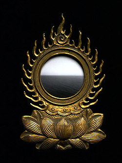
原载香港《内明》第186期：1987年9月1日